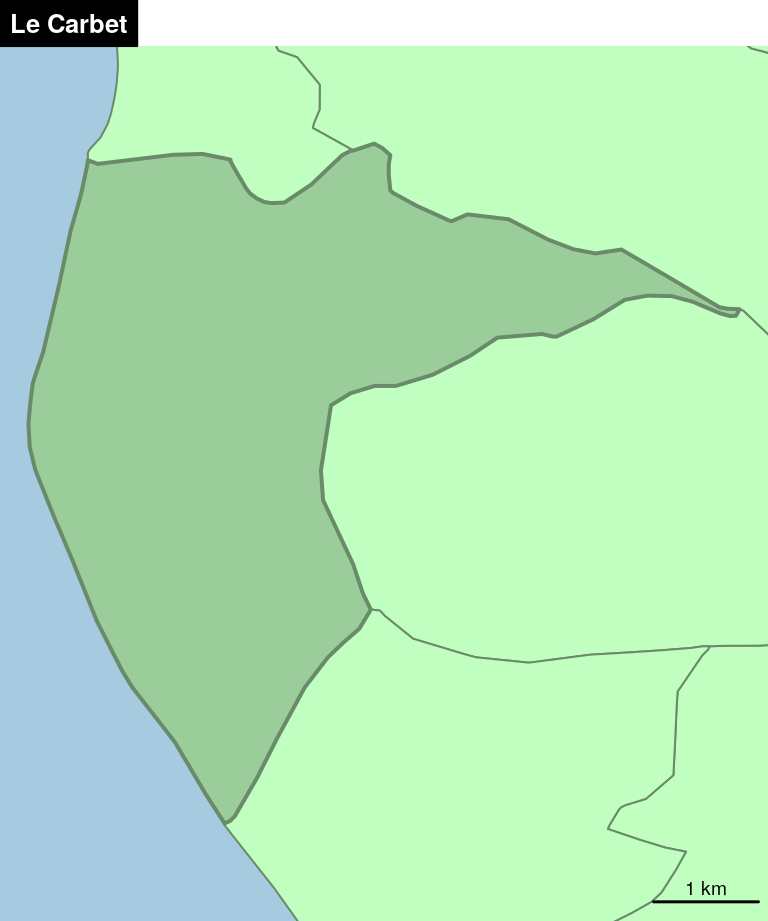
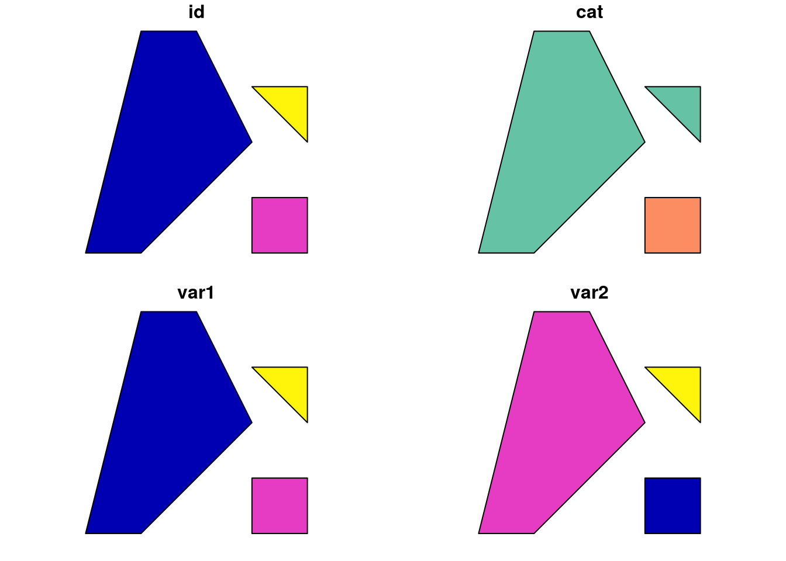
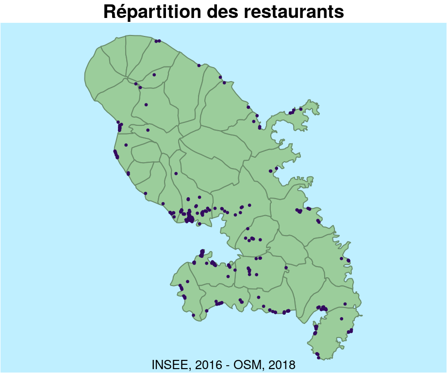

Chapitre 1 Les données spatiales
Il est possible d’importer, de manipuler, de traiter, d’afficher et d’exporter des données spatiales avec R. La grande majorité des opérations de géotraitement sont disponibles dans R grace au package sf. Il devient alors possible d’utiliser R comme un SIG.
1.1 Le package sf
Historique
Historiquement, trois packages permettent d’importer, de manipuler et de transformer les données spatiales :
- Le package
rgdalqui est une interface entre R et les librairies GDAL (Geospatial Data Abstraction Library) et PROJ4 permet d’importer et d’exporter les données spatiales (les shapefiles par exemple) et aussi de gérer les projections cartographiques
- Le package
spfournit des classes et methodes pour les données spatiales dans R. Il permet afficher des fond de cartes, d’inspecter une table attributaire etc.
- Le package
rgeosdonne accès à la librairie d’opérations spatiales GEOS (Geometry Engine - Open Source) et rend donc disponible les opérations SIG classiques : calcul de surface ou de périmètre, calcul de distances, aggrégations spatiales, zones tampons, intersections etc.
La suite
Le package sf ((Pebesma 2018a), (Pebesma 2018b)) a été publié fin 2016 par Edzer Pebesma (auteur de sp). Son objectif est de combiner les fonctionnalités de sp, rgeos et rgdal dans un package unique plus ergonomique.
Ce package propose des objets plus simples (suivant le standard simple feature) dont la manipulation est plus aisée. Une attention particulière a été portée à la compatibilité du package avec la syntaxe pipe et les opérateurs du tidyverse.
Aujourd’hui, les principaux développements dans l’écosystème spatial de R se détachent progressivement des 3 anciens (sp, rgdal, rgeos) pour se reposer sur sf.
1.1.1 Format des objets spatiaux sf

Les objets sf sont des data.frame dont l’une des colonnes contient des géométries. Cette colonne est de la classe sfc (simple feature column) et chaque individu de la colonne est un sfg (simple feature geometry).
Ce format est très pratique dans la mesure ou les données et les géométries sont intrinsèquement liées dans un même objet.
1.1.2 Construction d’un objet sf
Couche de points
library(sf)
pt1_sfg <- st_point(c(1,2))
pt2_sfg <- st_point(c(3,4))
pt3_sfg <- st_point(c(2,1))
(pt_sfc <- st_sfc(pt1_sfg,pt2_sfg,pt3_sfg, crs = (4326)))Geometry set for 3 features
geometry type: POINT
dimension: XY
bbox: xmin: 1 ymin: 1 xmax: 3 ymax: 4
epsg (SRID): 4326
proj4string: +proj=longlat +datum=WGS84 +no_defspt_df <- data.frame(id= c(1,2,3), cat = c("A", "B", "A"),
var1 = c(10,20,30), var2 = c(2.3,1.9,4))
(pt_sf <- st_sf(pt_df,geometry = pt_sfc))Simple feature collection with 3 features and 4 fields
geometry type: POINT
dimension: XY
bbox: xmin: 1 ymin: 1 xmax: 3 ymax: 4
epsg (SRID): 4326
proj4string: +proj=longlat +datum=WGS84 +no_defs
id cat var1 var2 geometry
1 1 A 10 2.3 POINT (1 2)
2 2 B 20 1.9 POINT (3 4)
3 3 A 30 4.0 POINT (2 1)plot(pt_sf)
Couche de polygones
p1 <- rbind(c(0,0), c(1,0), c(3,2), c(2,4), c(1,4), c(0,0))
p2 <- rbind(c(3,0), c(4,0), c(4,1), c(3,1), c(3,0))
p3 <- rbind(c(3,3), c(4,2), c(4,3), c(3,3))
pol1_sfg <-st_polygon(list(p1))
pol2_sfg <-st_polygon(list(p2))
pol3_sfg <-st_polygon(list(p3))
(pol_sfc <- st_sfc(pol1_sfg, pol2_sfg, pol3_sfg, crs = 4326))Geometry set for 3 features
geometry type: POLYGON
dimension: XY
bbox: xmin: 0 ymin: 0 xmax: 4 ymax: 4
epsg (SRID): 4326
proj4string: +proj=longlat +datum=WGS84 +no_defspol_df <- data.frame(id= c(1,2,3), cat = c("A", "B", "A"),
var1 = c(10,20,30), var2 = c(2.3,1.9,4))
(pol_sf <- st_sf(pol_df,geometry = pol_sfc))Simple feature collection with 3 features and 4 fields
geometry type: POLYGON
dimension: XY
bbox: xmin: 0 ymin: 0 xmax: 4 ymax: 4
epsg (SRID): 4326
proj4string: +proj=longlat +datum=WGS84 +no_defs
id cat var1 var2 geometry
1 1 A 10 2.3 POLYGON ((0 0, 1 0, 3 2, 2 ...
2 2 B 20 1.9 POLYGON ((3 0, 4 0, 4 1, 3 ...
3 3 A 30 4.0 POLYGON ((3 3, 4 2, 4 3, 3 3))plot(pol_sf)
Couche de linestring
p1 <- rbind(c(0,0), c(1,0), c(3,2), c(2,4), c(1,4))
p2 <- rbind(c(3,0), c(4,0), c(4,1), c(3,1))
p3 <- rbind(c(3,3), c(4,2), c(4,3))
ls1_sfg <-st_linestring(p1)
ls2_sfg <-st_linestring(p2)
ls3_sfg <-st_linestring(p3)
(ls_sfc <- st_sfc(ls1_sfg, ls2_sfg, ls3_sfg, crs = 4326))Geometry set for 3 features
geometry type: LINESTRING
dimension: XY
bbox: xmin: 0 ymin: 0 xmax: 4 ymax: 4
epsg (SRID): 4326
proj4string: +proj=longlat +datum=WGS84 +no_defsls_df <- data.frame(id= c(1,2,3), cat = c("A", "B", "A"),
var1 = c(10,20,30), var2 = c(2.3,1.9,4))
(ls_sf <- st_sf(ls_df,geometry = ls_sfc))Simple feature collection with 3 features and 4 fields
geometry type: LINESTRING
dimension: XY
bbox: xmin: 0 ymin: 0 xmax: 4 ymax: 4
epsg (SRID): 4326
proj4string: +proj=longlat +datum=WGS84 +no_defs
id cat var1 var2 geometry
1 1 A 10 2.3 LINESTRING (0 0, 1 0, 3 2, ...
2 2 B 20 1.9 LINESTRING (3 0, 4 0, 4 1, ...
3 3 A 30 4.0 LINESTRING (3 3, 4 2, 4 3)plot(ls_sf)1.1.3 Import / Export
Les fonctions st_read() et st_write() permettent d’importer et d’exporter de nombreux types de fichiers.
library(sf)
mtq <- st_read("data/martinique.shp", quiet=TRUE)st_write(obj = mtq, dsn = "data/mtq.gpkg", layer = "mtq", delete_layer = TRUE)Deleting layer `mtq' using driver `GPKG'
Updating layer `mtq' to data source `data/mtq.gpkg' using driver `GPKG'
features: 34
fields: 23
geometry type: Polygonst_write(obj = mtq, "data/mtq.shp", delete_layer = TRUE)Deleting layer `mtq' using driver `ESRI Shapefile'
Writing layer `mtq' to data source `data/mtq.shp' using driver `ESRI Shapefile'
features: 34
fields: 23
geometry type: Polygon1.1.4 Affichage de données
Aperçu des variables via les fonctions head() et plot().
head(mtq)Simple feature collection with 6 features and 23 fields
geometry type: POLYGON
dimension: XY
bbox: xmin: 695444.4 ymin: 1598817 xmax: 717731.2 ymax: 1645182
epsg (SRID): 32620
proj4string: +proj=utm +zone=20 +datum=WGS84 +units=m +no_defs
INSEE_COM STATUT LIBGEO P13_POP C13_POP C13_CS1 C13_CS2
1 97201 Commune simple L'Ajoupa-Bouillon 1830 1481.801 9.780866 48.90433
2 97202 Commune simple Les Anses-d'Arlet 3929 3190.115 97.433459 170.50855
3 97203 Commune simple Basse-Pointe 3565 2983.215 39.510829 98.77707
C13_CS3 C13_CS4 C13_CS5 C13_CS6 C13_CS7 C13_CS8 P08_POP C08_POP C08_CS1
1 9.780866 102.6991 273.8642 288.5355 430.3581 317.8781 1691 1346.519 31.40569
2 109.612642 239.5239 560.2424 385.6741 746.5743 880.5453 3826 3067.742 49.00453
3 43.461911 181.7498 568.9559 565.0048 940.5055 545.2494 3804 3054.108 44.51803
C08_CS2 C08_CS3 C08_CS4 C08_CS5 C08_CS6 C08_CS7 C08_CS8
1 43.18282 11.77713 145.2513 223.7655 251.2455 380.7940 259.0969
2 143.95079 65.33937 216.3534 600.3054 459.4174 558.8020 974.5694
3 106.84327 27.70011 186.0292 448.1481 620.2845 881.5853 738.9993
geometry
1 POLYGON ((699261.2 1637681,...
2 POLYGON ((709840 1599026, 7...
3 POLYGON ((706092.8 1642964,...
[ reached 'max' / getOption("max.print") -- omitted 3 rows ]plot(mtq)
Affichage de la géométrie uniquement.
plot(st_geometry(mtq))
1.1.5 Joindre des données
On peut joindre un data.frame à un objet sf en utilisant la fonction merge().
mtq2016 <- read.csv(file = "data/mtq2016.csv")
head(mtq2016) ID NOM Population.totale
1 97201 L' Ajoupa-Bouillon 1964
2 97202 Les Anses-d'Arlet 3686
3 97203 Basse-Pointe 3238
4 97234 Bellefontaine 1760
5 97204 Le Carbet 3655
6 97205 Case-Pilote 4522mtq <- merge(x = mtq, y = mtq2016, by.x = "INSEE_COM", by.y = "ID")
head(mtq)Simple feature collection with 6 features and 25 fields
geometry type: POLYGON
dimension: XY
bbox: xmin: 695444.4 ymin: 1598817 xmax: 717731.2 ymax: 1645182
epsg (SRID): 32620
proj4string: +proj=utm +zone=20 +datum=WGS84 +units=m +no_defs
INSEE_COM STATUT LIBGEO P13_POP C13_POP C13_CS1 C13_CS2
1 97201 Commune simple L'Ajoupa-Bouillon 1830 1481.801 9.780866 48.90433
2 97202 Commune simple Les Anses-d'Arlet 3929 3190.115 97.433459 170.50855
3 97203 Commune simple Basse-Pointe 3565 2983.215 39.510829 98.77707
C13_CS3 C13_CS4 C13_CS5 C13_CS6 C13_CS7 C13_CS8 P08_POP C08_POP C08_CS1
1 9.780866 102.6991 273.8642 288.5355 430.3581 317.8781 1691 1346.519 31.40569
2 109.612642 239.5239 560.2424 385.6741 746.5743 880.5453 3826 3067.742 49.00453
3 43.461911 181.7498 568.9559 565.0048 940.5055 545.2494 3804 3054.108 44.51803
C08_CS2 C08_CS3 C08_CS4 C08_CS5 C08_CS6 C08_CS7 C08_CS8 NOM
1 43.18282 11.77713 145.2513 223.7655 251.2455 380.7940 259.0969 L' Ajoupa-Bouillon
2 143.95079 65.33937 216.3534 600.3054 459.4174 558.8020 974.5694 Les Anses-d'Arlet
3 106.84327 27.70011 186.0292 448.1481 620.2845 881.5853 738.9993 Basse-Pointe
Population.totale geometry
1 1964 POLYGON ((699261.2 1637681,...
2 3686 POLYGON ((709840 1599026, 7...
3 3238 POLYGON ((706092.8 1642964,...
[ reached 'max' / getOption("max.print") -- omitted 3 rows ]1.2 Les systèmes de projections
1.2.1 Consulter la projection d’un objet
La fonction st_crs() permet de consulter le système de projection utilisé par un objet sf et de la modifier (sans reprojeter les données).
st_crs(mtq)Coordinate Reference System:
EPSG: 32620
proj4string: "+proj=utm +zone=20 +datum=WGS84 +units=m +no_defs"1.2.2 Modifier la projection d’un objet
La fonction st_transform() permet de reprojeter un objet sf.
plot(st_geometry(mtq))
title("WGS 84 / UTM zone 20N")
mtq_reproj <- st_transform(mtq, 2154)
plot(st_geometry(mtq_reproj))
title("RGF93 / Lambert-93") Le site Spatial Reference met à disposition les références de très nombreux systèmes de projection.
Le site Spatial Reference met à disposition les références de très nombreux systèmes de projection.
1.3 Opérations de géotraitement
1.3.1 Sélection par attributs
Les objets sf sont des data.frame, on peut donc sélectionner leur lignes et leur colonnes de la même manière que les data.frame.
# selection de ligne
mtq[1:2, ]Simple feature collection with 2 features and 23 fields
geometry type: POLYGON
dimension: XY
bbox: xmin: 697601.7 ymin: 1598817 xmax: 710461.9 ymax: 1640521
epsg (SRID): 32620
proj4string: +proj=utm +zone=20 +datum=WGS84 +units=m +no_defs
INSEE_COM STATUT LIBGEO P13_POP C13_POP C13_CS1 C13_CS2
1 97201 Commune simple L'Ajoupa-Bouillon 1830 1481.801 9.780866 48.90433
2 97202 Commune simple Les Anses-d'Arlet 3929 3190.115 97.433459 170.50855
C13_CS3 C13_CS4 C13_CS5 C13_CS6 C13_CS7 C13_CS8 P08_POP C08_POP C08_CS1
1 9.780866 102.6991 273.8642 288.5355 430.3581 317.8781 1691 1346.519 31.40569
2 109.612642 239.5239 560.2424 385.6741 746.5743 880.5453 3826 3067.742 49.00453
C08_CS2 C08_CS3 C08_CS4 C08_CS5 C08_CS6 C08_CS7 C08_CS8
1 43.18282 11.77713 145.2513 223.7655 251.2455 380.794 259.0969
2 143.95079 65.33937 216.3534 600.3054 459.4174 558.802 974.5694
geometry
1 POLYGON ((699261.2 1637681,...
2 POLYGON ((709840 1599026, 7...mtq[mtq$LIBGEO=="Fort-de-France", ]Simple feature collection with 1 feature and 23 fields
geometry type: POLYGON
dimension: XY
bbox: xmin: 704448.6 ymin: 1614283 xmax: 711650.9 ymax: 1626937
epsg (SRID): 32620
proj4string: +proj=utm +zone=20 +datum=WGS84 +units=m +no_defs
INSEE_COM STATUT LIBGEO P13_POP C13_POP C13_CS1 C13_CS2
9 97209 Préfecture de région Fort-de-France 84174 68712.33 86.57284 2720.489
C13_CS3 C13_CS4 C13_CS5 C13_CS6 C13_CS7 C13_CS8 P08_POP C08_POP C08_CS1
9 4000.387 8407.424 13799.23 7309.136 16184.26 16204.84 89000 71566.82 119.0608
C08_CS2 C08_CS3 C08_CS4 C08_CS5 C08_CS6 C08_CS7 C08_CS8
9 2480.105 3976.898 8630.605 15437.6 7964.513 15996.58 16961.46
geometry
9 POLYGON ((711183.1 1619627,...# selection de colonnes
mtq[mtq$LIBGEO=="Fort-de-France", 1:4]Simple feature collection with 1 feature and 4 fields
geometry type: POLYGON
dimension: XY
bbox: xmin: 704448.6 ymin: 1614283 xmax: 711650.9 ymax: 1626937
epsg (SRID): 32620
proj4string: +proj=utm +zone=20 +datum=WGS84 +units=m +no_defs
INSEE_COM STATUT LIBGEO P13_POP geometry
9 97209 Préfecture de région Fort-de-France 84174 POLYGON ((711183.1 1619627,...1.3.2 Sélection spatiale
Sélection des communes intesectant Fort-de-France
fdf <- mtq[mtq$LIBGEO == "Fort-de-France", ]
mtq$fdf <- st_intersects(x = mtq, y = fdf, sparse = FALSE)
plot(st_geometry(mtq))
plot(st_geometry(mtq[mtq$fdf,]), col = "grey", add = TRUE)
1.3.3 Extraire des centroides
mtq_c <- st_centroid(mtq)
plot(st_geometry(mtq))
plot(st_geometry(mtq_c), add=TRUE, cex=1.2, col="red", pch=20)
1.3.4 Créer une matrice de distances
Si le système de projection du jeu de données est renseigné les distances sont exprimées dans l’unité de mesure de la projection (en mètres le plus souvent).
mat <- st_distance(x = mtq_c, y = mtq_c)
mat[1:5,1:5]Units: [m]
[,1] [,2] [,3] [,4] [,5]
[1,] 0.000 35297.56 3091.501 12131.617 17136.310
[2,] 35297.557 0.00 38332.602 25518.913 18605.249
[3,] 3091.501 38332.60 0.000 15094.702 20226.198
[4,] 12131.617 25518.91 15094.702 0.000 7177.011
[5,] 17136.310 18605.25 20226.198 7177.011 0.0001.3.5 Agréger des polygones
mtq_u <- st_union(mtq)
plot(st_geometry(mtq), col="lightblue")
plot(st_geometry(mtq_u), add=T, lwd=2, border = "red")
1.3.6 Agréger des polygones en fonction d’une variable
library(dplyr)
mtq_u2 <- mtq %>%
group_by(STATUT) %>%
summarize(P13_POP=sum(P13_POP))
plot(mtq_u2["STATUT"], key.pos = NULL)
1.3.7 Construire une zone tampon
mtq_b <- st_buffer(x = mtq_u, dist = 2000)
plot(st_geometry(mtq), col="lightblue")
plot(st_geometry(mtq_u), add=T, lwd=2)
plot(st_geometry(mtq_b), add=T, lwd=2, border = "red")
1.3.8 Réaliser une intersection
m <- rbind(c(700015,1624212), c(700015,1641586), c(719127,1641586),
c(719127,1624212), c(700015,1624212))
p <- st_sf(st_sfc(st_polygon(list(m))), crs = st_crs(mtq))
plot(st_geometry(mtq))
plot(p, border="red", lwd=2, add=T)
mtq_z <- st_intersection(x = mtq, y = p)
plot(st_geometry(mtq))
plot(st_geometry(mtq_z), col="red", border="green", add=T)
plot(st_geometry(mtq_z))
1.3.9 Compter des points dans un polygone
pts <- st_sample(x = mtq, size = 50)
plot(st_geometry(mtq))
plot(pts, pch = 20, col = "red", add=TRUE, cex = 1)
inter <- st_intersects(mtq, pts)
mtq$nbpts <- sapply(X = inter, FUN = length)
plot(st_geometry(mtq))
plot(st_geometry(mtq[mtq$nbpts>2,]), col = "grey", add=TRUE)
plot(pts, pch = 20, col = "red", add=TRUE, cex = 1)
1.3.10 Construire des polygones de Voronoi
google: “st_voronoi R sf” (https://github.com/r-spatial/sf/issues/474 & https://stackoverflow.com/questions/45719790/create-voronoi-polygon-with-simple-feature-in-r)
mtq_v <- st_voronoi(x = st_union(mtq_c))
mtq_v <- st_intersection(st_cast(mtq_v), st_union(mtq))
mtq_v <- st_join(x = st_sf(mtq_v), y = mtq_c, join=st_intersects)
mtq_v <- st_cast(mtq_v, "MULTIPOLYGON")
plot(st_geometry(mtq_v), col='lightblue')
1.4 Géocodage d’adresses
Plusieurs packages permettent de géocoder des adresses.
# remotes::install_github(repo = 'rCarto/photon')
library(photon)
address <- c("19 rue Michel Bakounine, 29600 Morlaix, France",
"8 place Paul Ricoeur, 75013 Paris")
place <- photon::geocode(address, limit = 1, key = "place", lang = "fr")
place location osm_id osm_type name housenumber
1 19 rue Michel Bakounine, 29600 Morlaix, France 3241060871 N <NA> 19
2 8 place Paul Ricoeur, 75013 Paris 2608793979 N <NA> 8
street postcode city state country osm_key osm_value lon
1 Rue Michel Bakounine 29600 Morlaix Bretagne France place house -3.816435
2 Place Paul Ricoeur 75013 Paris Île-de-France France place house 2.382483
lat msg
1 48.59041 <NA>
2 48.82670 <NA>nominatim(Rudis 2019)
# remotes::install_github("hrbrmstr/nominatim")
library(nominatim)
address <- c(URLencode("19 rue Michel Bakounine, 29600 Morlaix, France"),
URLencode("8 place Paul Ricoeur, 75013 Paris"))
place <- osm_geocode(address,
country_codes = "FR",
key = "UneClefMapQuestValide")
place place_id
1 44644129
2 27209988
licence
1 Data © OpenStreetMap contributors, ODbL 1.0. https://www.openstreetmap.org/copyright
2 Data © OpenStreetMap contributors, ODbL 1.0. https://www.openstreetmap.org/copyright
osm_type osm_id lat lon
1 node 3241060871 48.59041 -3.816435
2 node 2608793979 48.82670 2.382483
display_name
1 19, Rue Michel Bakounine, Ploujean, Kerozar, Morlaix, Finistère, Brittany, Metropolitan France, 29600, France
2 8, Place Paul Ricoeur, Gare, 13th Arrondissement, Paris, Ile-de-France, Metropolitan France, 75013, France
class type importance bbox_left bbox_top bbox_right bbox_bottom
1 place house 0.741 48.59036 48.59046 -3.816485 -3.816384
2 place house 0.631 48.82665 48.82675 2.382433 2.382533banR(Gombin and Chevalier 2017), pour des adresses en France uniquement.
library(banR)
address <- c("19 rue Michel Bakounine, 29600 Morlaix, France",
"8 place Paul Ricoeur, 75013 Paris")
place <- geocode_tbl(tbl = data.frame(address), adresse = "address")
place# A tibble: 2 x 14
address latitude longitude result_label result_score result_type result_id
<chr> <dbl> <dbl> <chr> <dbl> <chr> <chr>
1 19 rue… 48.6 -3.82 19 Rue Mich… 0.78 housenumber ADRNIVX_…
2 8 plac… 48.8 2.38 8 Place Pau… 0.93 housenumber ADRNIVX_…
# … with 7 more variables: result_housenumber <int>, result_name <chr>,
# result_street <chr>, result_postcode <int>, result_city <chr>, result_context <chr>,
# result_citycode <chr>Transformer les données en objet sf
library(sf)
library(cartography)
place_sf <- st_as_sf(place, coords = c("longitude", "latitude"), crs = 4326)
osm_fr <- getTiles(x = place_sf, zoom = 7 )
tilesLayer(osm_fr)
plot(st_geometry(place_sf), pch = 20, cex = 4, col = "red", add=T)
1.5 Importer des données OSM
OpenStreetMap (OSM) est un projet de cartographie participative qui a pour but de constituer une base de données géographiques libre à l’échelle mondiale. OpenStreetMap vous permet de voir, modifier et utiliser des données géographiques dans le Monde entier.
Le package osmdata (Padgham et al. 2017) permet d’extraire des données vectorielles depuis OSM.
library(sf)
library(osmdata)
mtq <- st_read("data/martinique.shp", quiet = TRUE)
# Définition d'une bounding box
q <- opq(bbox=st_bbox(st_transform(mtq,4326)))
# Extraction des resaturants
res <- add_osm_feature(opq = q, key = 'amenity', value = "restaurant")
res.sf <- osmdata_sf(res)
res.sf.pts <- res.sf$osm_points[!is.na(res.sf$osm_points$amenity),]
res.sf.pol <- res.sf$osm_polygons
st_geometry(res.sf.pol) <- st_centroid(st_geometry(res.sf.pol))
# Extraction des fast food
ff <- add_osm_feature(opq = q, key = 'amenity',value = "fast_food")
ff.sf <- osmdata_sf(ff)
ff.sf.pts <- ff.sf$osm_points[!is.na(ff.sf$osm_points$amenity),]
ff.sf.pol <- ff.sf$osm_polygons
st_geometry(ff.sf.pol) <- st_centroid(st_geometry(ff.sf.pol))
# Extraction des cafés
caf <- add_osm_feature(opq = q, key = 'amenity', value = "cafe" )
caf.sf <- osmdata_sf(caf)
caf.sf.pts <- caf.sf$osm_points[!is.na(caf.sf$osm_points$amenity),]
caf.sf.pol <- caf.sf$osm_polygons
st_geometry(caf.sf.pol) <- st_centroid(st_geometry(caf.sf.pol))
# regroupement des 3 types d'établissement
resto <- rbind(
res.sf.pts[, c("osm_id", "name")], res.sf.pol[, c("osm_id", "name")],
ff.sf.pts[, c("osm_id", "name")], ff.sf.pol[, c("osm_id", "name")],
caf.sf.pts[, c("osm_id", "name")], caf.sf.pol[, c("osm_id", "name")]
)
resto <- st_transform(resto, st_crs(mtq))
# Affichage des restaurants
plot(st_geometry(mtq), col="darkseagreen3", border="darkseagreen4",
bg = "lightblue1")
plot(st_geometry(resto), add=TRUE, pch=20, col = "#330A5FFF", cex = 0.5)
title("Répartition des restaurants")
mtext(text = "INSEE, 2016 - OSM, 2018",side = 1, line = -1, cex = 0.8)
References
Pebesma, Edzer. 2018a. Sf: Simple Features for R. https://CRAN.R-project.org/package=sf.
Pebesma, Edzer. 2018b. “Simple Features for R: Standardized Support for Spatial Vector Data.” The R Journal. https://journal.r-project.org/archive/2018/RJ-2018-009/index.html.
Giraud, Timothée. 2017b. Photon: Geocode Locations with Photon Api. https://github.com/rCarto/photon.
Rudis, Bob. 2019. Nominatim: Tools for Working with the ’Nominatim’ Api.
Gombin, Joel, and Paul-Antoine Chevalier. 2017. BanR: R Client for the Ban Api. https://CRAN.R-project.org/package=banR.
Padgham, Mark, Bob Rudis, Robin Lovelace, and Maëlle Salmon. 2017. “Osmdata.” The Journal of Open Source Software 2 (14). The Open Journal. https://doi.org/10.21105/joss.00305.